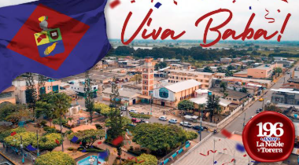
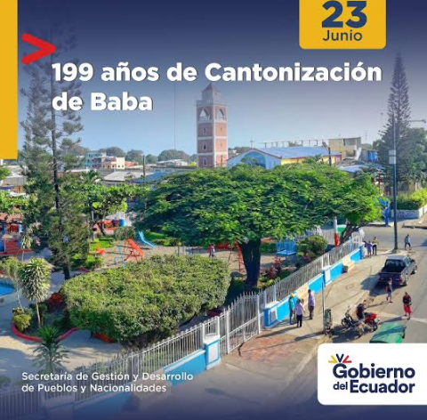
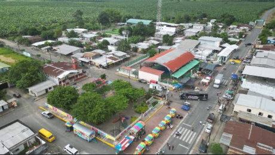
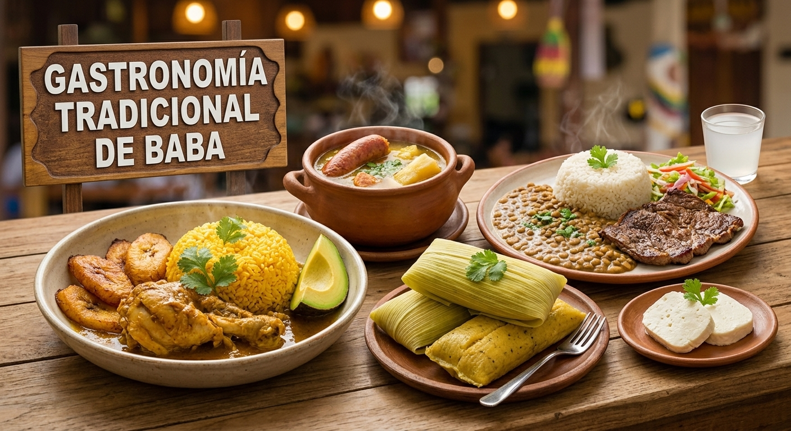
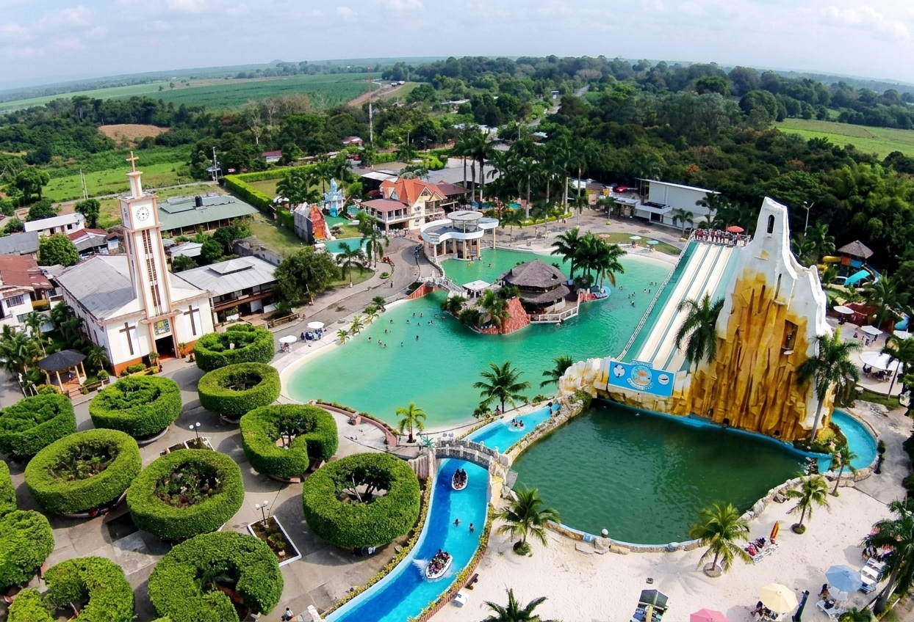
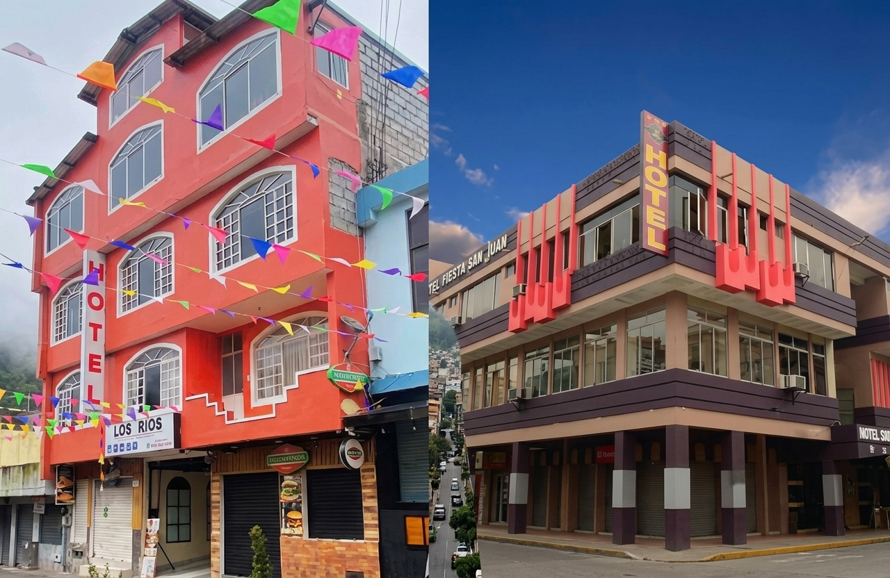
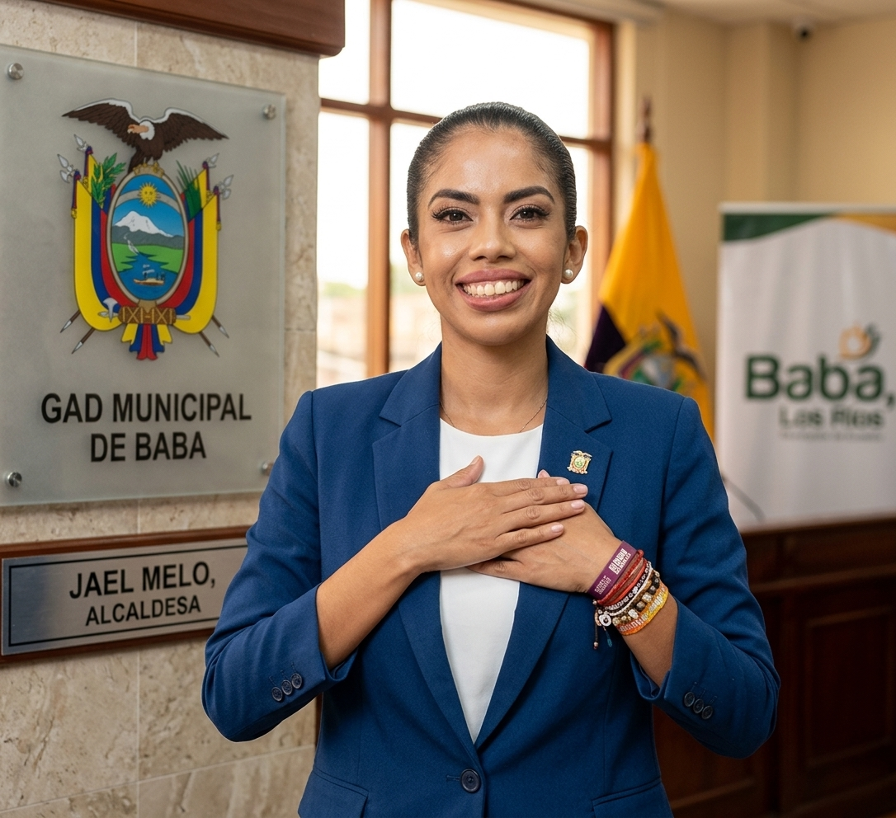
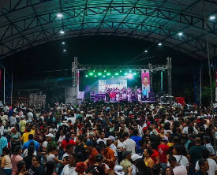

Bienvenido a la página oficial del histórico cantón Baba, conocido por su riqueza agrícola, su historia independentista y sus profundas tradiciones montubias.

Baba es uno de los cantones más antiguos de la provincia de Los Ríos. Tuvo un rol protagónico durante la época colonial y las gestas libertarias, destacándose por la firmeza de su pueblo y su importante aporte a la identidad fluminense.

El cantón se encuentra políticamente estructurado de la siguiente manera:

La cocina tradicional de Baba destaca por sus deliciosos y variados platos típicos de la costa ecuatoriana:

Entre sus principales encantos se encuentran sus hermosos ríos aptos para el turismo fluvial, las haciendas tradicionales y las emocionantes jornadas de rodeo montubio.

El cantón cuenta con hospedajes locales, hostales y residencias acogedoras que brindan comodidad y una cálida atención a los visitantes.

Alcaldesa: Jael Melo Olvera

El cantón alberga a aproximadamente 40.000 habitantes, cuya economía se sustenta principalmente en la agricultura, la ganadería y el comercio local.
Se localiza en la zona sur-occidental de la provincia de Los Ríos, limitando con los cantones Babahoyo, Puebloviejo, Vinces y Salitre.